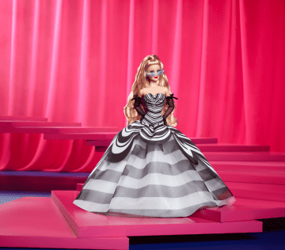
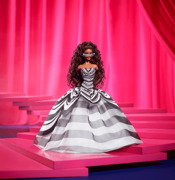
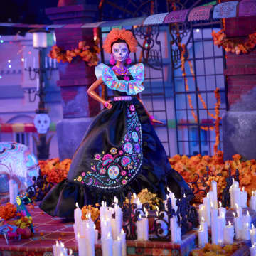
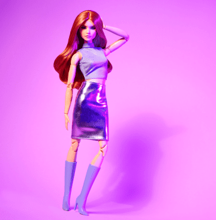

História Breve da BarbieA Barbie foi criada em 1959 por Ruth Handler, co-fundadora da Mattel. Inspirada na filha, Barbara, Ruth desejava criar uma boneca que permitisse às meninas imaginar um futuro e explorar diferentes papéis na sociedade. A primeira Barbie foi apresentada ao público na Feira de Brinquedos de Nova York, e rapidamente se tornou um sucesso. Desde então, a Barbie evoluiu, refletindo as mudanças culturais e sociais, e já foi apresentada em diversas profissões, mostrando que pode ser o que quiser. Ao longo dos anos, a boneca se tornou um ícone global, inspirando gerações de meninas a sonhar grande. |
||||
|---|---|---|---|---|
Principais Características da BarbieA Barbie é uma boneca conhecida por sua versatilidade, permitindo que meninas explorem diferentes estilos e personalidades. Desde sua criação, ela já assumiu mais de 200 profissões, incluindo médica, astronauta, engenheira e artista, refletindo a diversidade de carreiras que as mulheres podem seguir. Ao longo dos anos, a Barbie evoluiu para acompanhar as mudanças sociais e culturais, tornando-se mais inclusiva e representativa. Seu design e aparência se adaptaram, refletindo as últimas tendências da moda e do estilo. Além disso, a Barbie tem um grupo de amigas icônicas, como Skipper, Teresa e Christie, que enriquecem suas histórias e interações. Ela é frequentemente vista como um símbolo de empoderamento, incentivando as meninas a sonhar grande e acreditar em si mesmas. Por fim, muitas versões da Barbie se tornaram itens de coleção, atraindo fãs de todas as idades e reforçando seu status como um ícone cultural. |
||||
Galeria de Imagens da Barbie    |
||||
Profissões da Barbie |
A Barbie é famosa por sua incrível versatilidade e, ao longo dos anos, já assumiu mais de 200 profissões, mostrando que ela pode ser o que quiser! Desde sua criação, a boneca tem inspirado meninas a sonhar alto e acreditar em suas capacidades. Algumas das profissões mais icônicas da Barbie incluem:
| |||
Curiosidades sobre a Barbie |
A Barbie é muito mais do que uma simples boneca; ela é um ícone cultural com uma rica história. Aqui estão algumas curiosidades divertidas sobre a Barbie:
| |||
Frases Inspiradoras da Barbie |
|
|||
|
Volte ao menu
Site da Barbie |